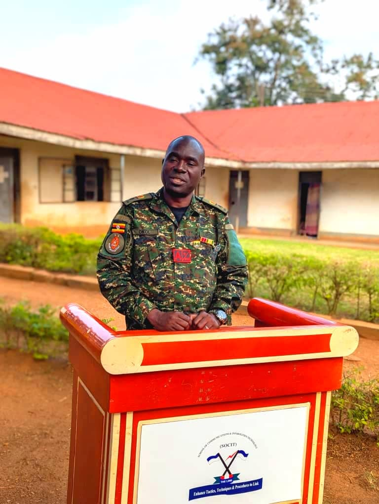

Welcome!Hello! My name is Mr. Tom Benard Okol, an experienced Information Technology Officer with the National Council of Sports (NCS)sports information systems, cyber security, and ICT management for modern sports administration. I have extensive expertise in network security administration, ICT infrastructure design, database management, and digital platforms that support sports federations and athletes across Uganda. A graduate of various professional ICT training programs, I have undertaken specialized courses in information security, system integration, and sports technology solutions. My strong technical background and leadership skills position me as a key contributor to the digital transformation of sports management at NCS. I have been actively involved in leading projects such as digital registration platforms for athletes, networking and ICT infrastructure setup for stadiums, and cybersecurity strategies to protect sensitive sports data and organizational systems. Beyond technical work, I contribute to policy formulation, ICT strategic planning, and mentorship of young ICT professionals in the sports sector. My role continues to strengthen efficiency, transparency, and digital innovation in Uganda’s sports ecosystem. |

Mr Tom Benard Okol |